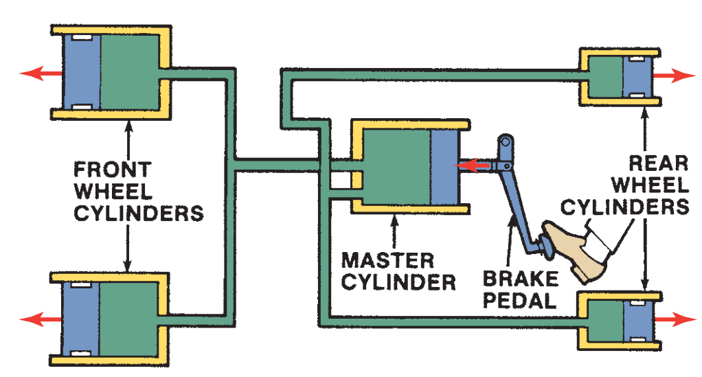
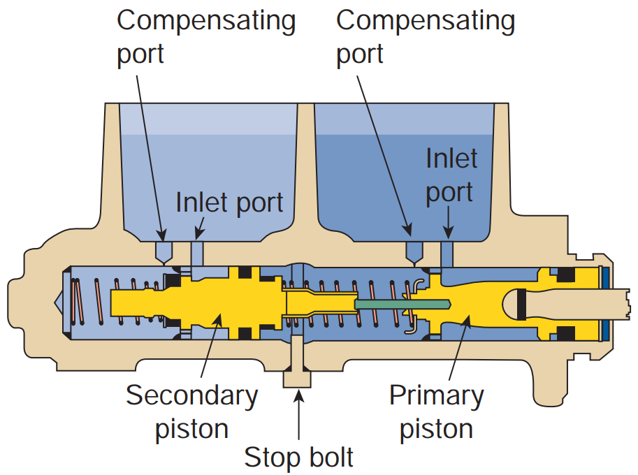
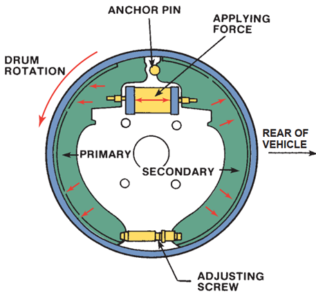
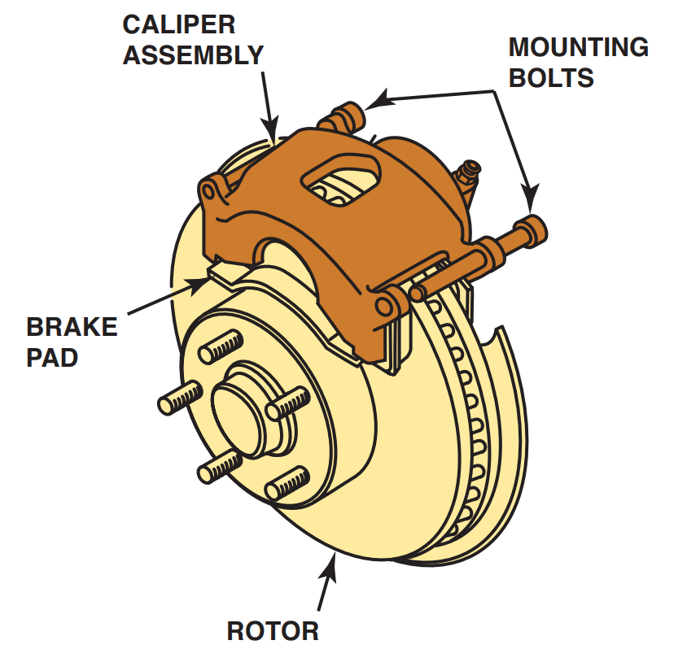

Brakes are an energy-absorbing mechanism that converts vehicle movement into heat while stopping the rotation of the wheels. All braking systems are designed to reduce the speed and stop a moving vehicle and to keep it from moving if the vehicle is stationary.
HYDRAULIC BRAKE SYSTEM

Figure 10.2. A schematic of a basic automotive hydraulic brake system.
A hydraulic system (Figure 10.2) uses a brake fluid to transfer pressure from the brake pedal to the pads or shoes. This transfer of pressure is reliable and consistent because liquids are not compressible. That is, pressure applied to a liquid in a closed system is transmitted by that liquid equally to every other part of that system. Apply a force of 5 pounds (35 kPa) per square inch (psi) through the master cylinder and you can measure 5 psi (35 kPa) anywhere in the lines and at each wheel where the brakes operate.
The master cylinder is the heart of the hydraulic brake system. No braking occurs until the driver depresses the brake pedal that begins with the master cylinder.
Figure 10.3 is a simplified illustration of a master cylinder. A pushrod is connected to a piston inside the cylinder, and hydraulic fluid is in front of the piston. When the pedal is pressed, the piston is pushed forward. The fluid transmits the force of the piston to all the inner surfaces of the system. Only the pistons in the drum brake wheel cylinders and/or disc brake calipers can move, and they move outward to force the brake shoes or pads against the rotating brake drums and/or rotors.

Figure 10.3. The basic components of master cylinder.
DRUM AND DISC BRAKE ASSEMBLIES
Although drum and disc brakes are explained in great detail in later chapters, a brief explanation of their components and operating principles is essential at this point.
Drum Brake
Drum brake operation is fairly simple. The most important feature contributing to the effectiveness of the braking force supplied by the drum brake is the brake shoe pressure or force directed against the drum (Figure 10.4). With the vehicle moving in either the forward or reverse direction with the brakes on, the applied force of the brake shoe pressing against the brake drum increasingly multiplies itself (called self-energizing) because the brake’s anchor pin acts as a brake shoe stop and prohibits the brake shoe from its tendency to follow the movement of the rotating drum. The result is a wedging action between the brake shoe and brake drum. The wedging action combined with the applied brake force creates a self-multiplied brake force.

Figure 10.4. A typical drum brake.
Disc brake

Figure 10.5.A typical disc brake.
Disc brakes resemble the brakes on a bicycle. The friction elements are in the form of pads, which are squeezed or clamped about the edge of a rotating wheel. With fully automotive disc brakes, this wheel is a separate unit mounted to the wheel, called the rotor (Figure 10.5). The rotor is typically made of cast iron. Because the pads clamp against both sides of a rotor, both sides are machined smooth. The pads are attached to metal backings, which are actuated by pistons. The pistons are contained within a caliper assembly, which is a housing that wraps around the edge of the rotor. The caliper is mounted to the steering knuckle to stop it from rotating. The caliper contains the pistons and related seals, springs, bleeder screws, and boots as well as the cylinder(s) and fluid passages necessary to force the pads against the rotor.
Disc brakes offer four major advantages over drum brakes. Disc brakes are more resistant to heat fade during high-speed brake stops or repeated stops. The design of the disc brake rotor exposes more surface to the air and thus dissipates heat more efficiently. They are also resistant to water fade because the rotation of the rotor tends to throw off moisture. The squeeze of the sharp edges of the pads clears the surface of water. Disc brakes perform more straight-line stops. Due to their clamping action, disc brakes are less apt to pull. Finally, disc brakes automatically adjust as pads wear.